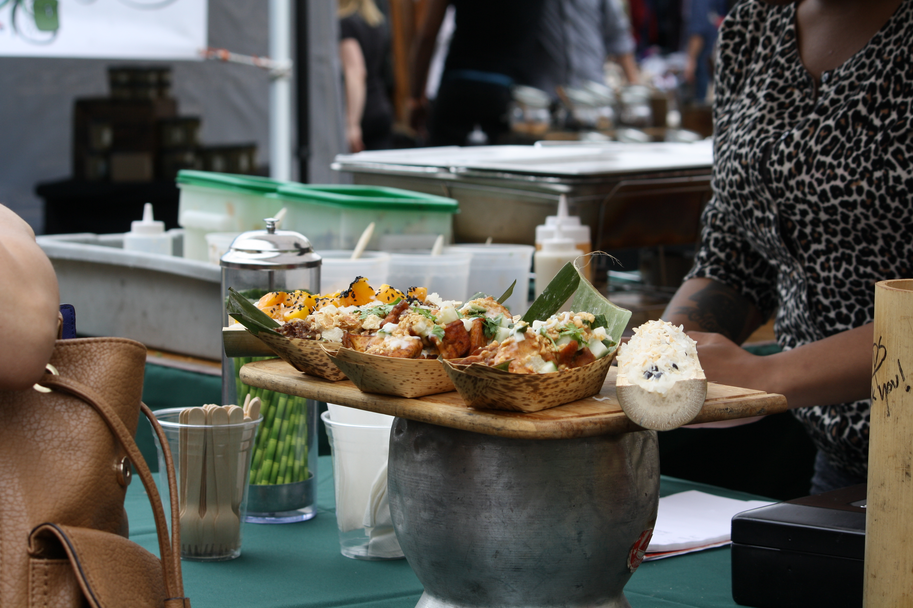
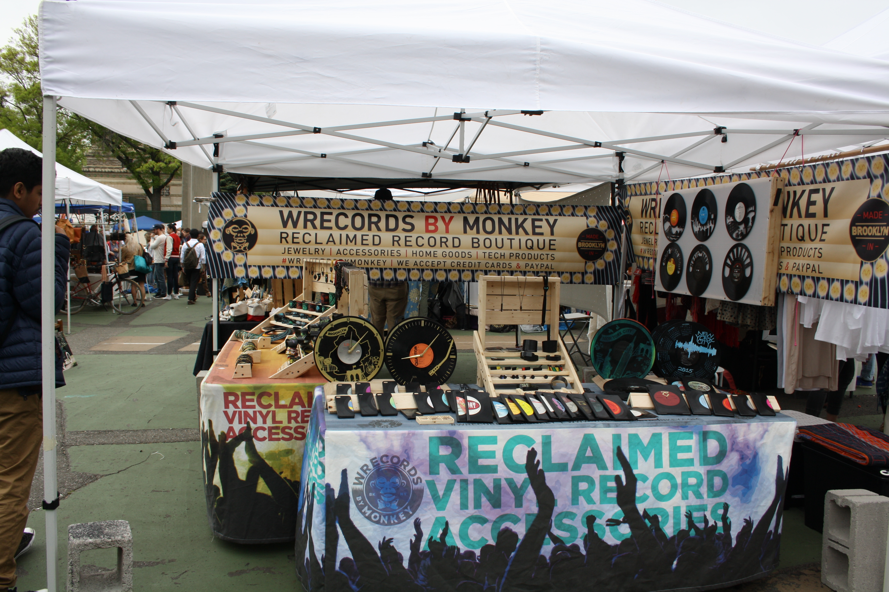

Brooklyn/Brooklyn Flea Market
Founded in April 2008, Brooklyn Flea has grown into one of New York City’s top attractions, operating flea markets every weekend of the year that feature hundreds of top vendors of furniture, vintage clothing, collectibles and antiques, as well as a tightly curated selection of jewelry, art, and crafts by local artisans and designers, plus delicious fresh food. The New York Times called the Flea “One of the great urban experiences in New York”; Travel + Leisure, Country Living, Budget Travel, and Fodor’s have ranked the Flea one of the best markets in the U.S. and the world; and Time Out NY named the Flea one of New York’s Essential Pick-Up Spots.
Starting the first weekend in April through November, the markets take place outdoors: Saturdays in Fort Greene and Sundays in Williamsburg. The Flea also operates Smorgasburg, a giant all-food market that launched in May 2011 and happens Saturdays in Williamsburg and Sundays in Brooklyn Bridge Park. Smorgasburg showcases the best of Brooklyn’s artisanal food scene, with 100 local and regional vendors in a beautiful waterfront setting. From November through March, the market moves indoors to a single location. Additionally, every summer four Flea/Smorgasburg food vendors serve at the Central Park SummerStage outdoor concert series.

 |
|
 |
 |  |
 |
Jonathan is a Brooklyn-based entrepreneur. He is the founder of the real estate blog Brownstoner.com, which sold in March 2015, as well as the co-founder of the Brooklyn Flea and Smorgasburg markets. In 2012, Jonathan bought the former Studebaker Service Station in Crown Heights with BFC Partners and Goldman Sachs and converted it into office and studio space; the building is anchored on the ground floor by a 9,000-square-foot beer hall called Berg’n that includes a permanent food court of Smorgasburg food vendors. Jonathan received his BA from Princeton University in 1992 and an MBA from NYU in 1998. He is a member of the board of the Center for an Urban Future and the Myrtle Avenue Revitalization Project LDC. Jonathan resides with his wife and two children in Clinton Hill, Brooklyn.
Eric oversees the markets’ brand, daily operations, and curating of vendors as they have grown to become New York City’s largest public market. He served as Brooklyn Borough President Marty Markowitz’s communications director and speechwriter from 2003 to 2007, and worked as a journalist covering art, music, architecture, and politics from 1995 to 2007. He serves on the board of the Blue Marble Dreams project, which helps create women-owned and -operated ice-cream parlors in Rwanda and Haiti, and on the Culinary Council of Food Bank for New York City. He received a BA from Eugene Lang College at the New School in 1995 and lives in Prospect Heights, Brooklyn.